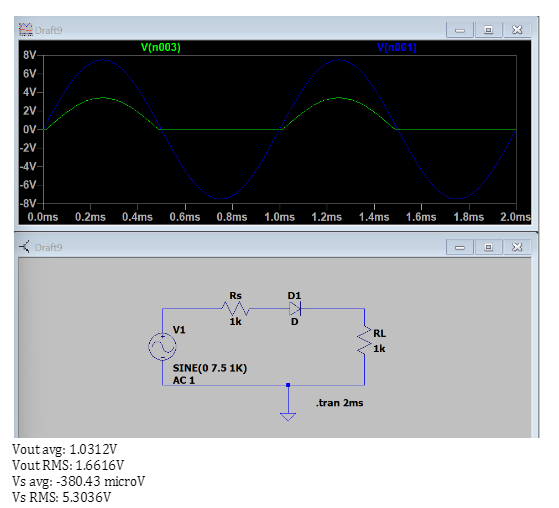
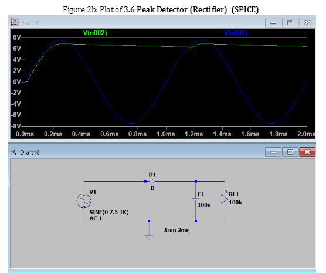
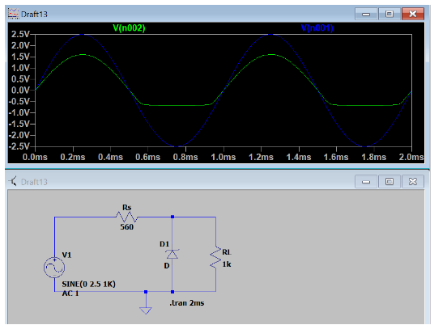
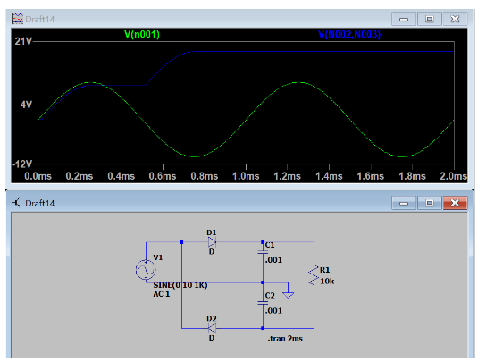
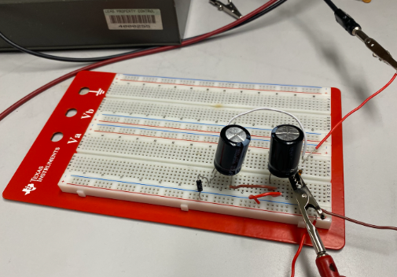

This is a page with some of the circuit designs and simulations I have made.
Half wave rectifier

This half wavev rectifier that I physically built and simulated converts alternating current (AC) to direct current (DC). The diode in the circuit only allows the positive half of the sine wave to pass through. The diode is forward-biased during teh positive half of teh AC voltage signal. During the negative side, there is no current.
Peak detector rectifier

This peak detector rectifier circuit holds the maximum value of teh input AC voltage signal. The diode only allows the current to pass through when the cycle of the AC signal is positive. When the peak of the AC signal is reached a capacitor, connected in parallel to the load, holds the peak voltage by storing teh charge. The voltage is slowly discharged from the capacitor.
Zener diode voltage regulator

This Zener diode Voltage regulator produces a DC output voltage using teh zener diode. The zener diode maintains a contant voltage accross the load, even with the AC signal. A zenera diode allows current to flow in reverse while maintaining a fixed voltage accross itself when it is in reverse breakdown mode.
Voltage multiplier circuit


This circuit I physically built and simulated increases the amplitude of teh AC input voltage, and provides a multiplied DC signal. The first diode is forward-biased and allows current to pass and charge the capacitor when the AC input is on its positive half-cycle. The first capacitor maintains teh peak voltage of teh AC signal. During the negative half-cycle of teh AC input, The second diode conducts current and allows current to go from the first to the second capacitor. The voltage from the first capacitor combines with the AC voltage and increases the voltage drop accross the load. The second capacitor holds teh doubled eak voltage.